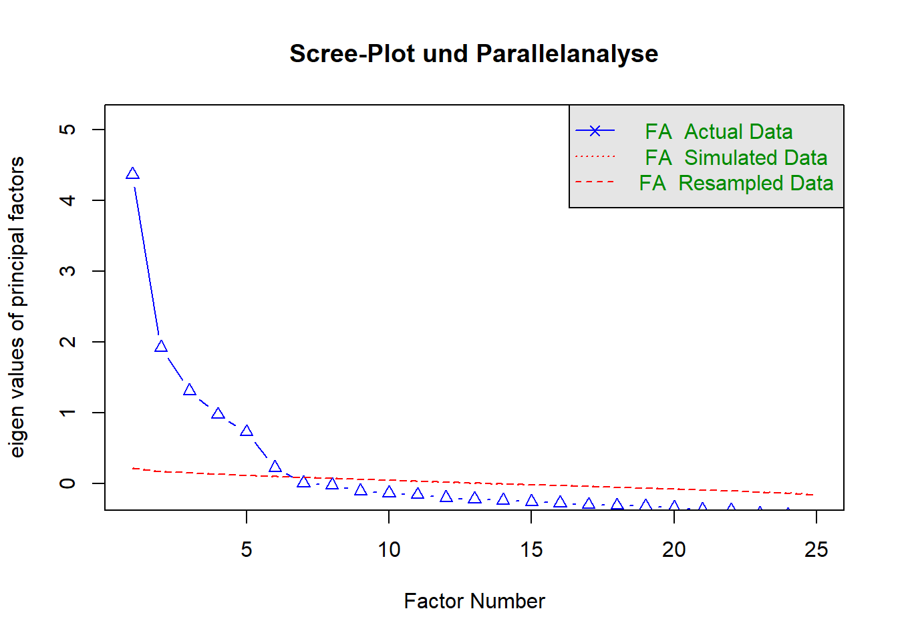

Code
fa.parallel(fragebogen_daten, fa = "fa", fm = "minres", main = "Scree-Plot und Parallelanalyse")
Parallel analysis suggests that the number of factors = 6 and the number of components = NA Nach der Bearbeitung dieses Kapitels können Sie:
In den Kapiteln 3 bis 5 haben wir uns intensiv mit der Regression beschäftigt. Wir hatten immer eine klare, bekannte Zielvariable \(y\) (z. B. Körpermasse, Zinssatz, Rückruf-Status), die wir durch Prädiktoren \(x\) vorhersagen wollten.
In der modernen Data Science nennt man diesen Ansatz Supervised Learning (Überwachtes Lernen): Das Modell wird anhand von konkreten “Lösungen” (den beobachteten \(y\)-Werten) trainiert und korrigiert seine Fehler.
Oft stehen wir in der empirischen Forschung (insbesondere bei Umfragen und Fragebögen) vor einem völlig anderen Problem: Wir haben gar kein konkretes \(y\), das wir vorhersagen wollen. Stattdessen haben wir einen riesigen Datensatz an \(x\)-Variablen und wollen wissen: Gibt es hier verborgene Muster oder Strukturen?
Dieser Ansatz heißt Unsupervised Learning (Unüberwachtes Lernen). Wir geben dem Algorithmus keine Lösungen vor, sondern lassen ihn die Daten selbstständig ordnen. Eines der wichtigsten Verfahren dafür ist die Dimensionsreduktion – und im Kontext von Fragebögen speziell die Faktoranalyse.
Stellen Sie sich vor, Sie werten eine Mitarbeiterumfrage aus. Sie haben 15 Fragen auf einer 5-stufigen Likert-Skala gestellt, die alle grob in Richtung “Arbeitszufriedenheit” gehen (z.B. “Ich mag mein Team”, “Mein Chef kommuniziert gut”, “Die Kaffeemaschine funktioniert”).
Wenn Sie nun versuchen, die Produktivität (\(y\)) der Mitarbeiter durch diese 15 Fragen (\(x_1\) bis \(x_{15}\)) in einem multiplen Regressionsmodell (lm) vorherzusagen, tappen Sie in eine massive Falle: Multikollinearität (siehe Kapitel 3). Wer bei “Ich mag mein Team” eine 5 ankreuzt, kreuzt oft auch bei “Gutes Arbeitsklima” eine 5 an. Die Variablen korrelieren so stark untereinander, dass die OLS-Mathematik zusammenbricht und die marginalen Effekte der einzelnen Fragen uninterpretierbar werden.
Anstatt 15 hochkorrelierte Fragen ins Modell zu zwingen, drehen wir die Logik um: Wir gehen davon aus, dass es ein unsichtbares, latentes Konstrukt (die wahre, innere “Arbeitszufriedenheit”) gibt. Dieses Konstrukt können wir nicht direkt messen. Wir können nur die 15 beobachtbaren Reaktionen (die manifesten Variablen) messen, die durch dieses Konstrukt verursacht werden.
Die Explorative Faktoranalyse (EFA) sucht nach genau diesen verborgenen latenten Variablen (den “Faktoren”). Sie fasst hochkorrelierte Einzelfragen zu wenigen, unkorrelierten Über-Dimensionen zusammen. Aus 15 Fragen wird so vielleicht ein einziger “Zufriedenheits-Score”, den wir danach sauber und gefahrlos in unser Regressionsmodell einbauen können.
Wir nutzen den bfi-Datensatz aus dem psych-Paket. Er enthält die Antworten von über 2.000 Personen auf 25 Fragen zu ihrer Persönlichkeit. Wir wollen prüfen, ob sich diese 25 Einzelfragen auf zugrundeliegende Persönlichkeits-Faktoren (Dimensionen) reduzieren lassen.
Bevor wir Faktoren extrahieren, müssen wir entscheiden, wie viele Faktoren mathematisch sinnvoll sind. Jede Frage ist eine Dimension. Wir haben 25 Dimensionen. Ein Faktor ist nur dann nützlich, wenn er wesentlich mehr Information (Varianz) bündelt als eine einzelne, isolierte Frage.
Das Standard-Werkzeug dafür ist der Scree-Plot in Kombination mit der Parallelanalyse.
fa.parallel(fragebogen_daten, fa = "fa", fm = "minres", main = "Scree-Plot und Parallelanalyse")
Parallel analysis suggests that the number of factors = 6 and the number of components = NA Wie Sie diesen Plot lesen:
Das Diagramm ist eindeutig: Nach dem 5. Faktor flacht die Kurve massiv ab (der “Geröll”-Knick, englisch scree). Es gibt 5 latente Konstrukte in diesen 25 Fragen. (Psychologen erkennen hier sofort die “Big Five” der Persönlichkeitsforschung wieder).
Nachdem wir wissen, dass wir 5 Faktoren suchen, lassen wir R berechnen, welche der 25 Fragen zu welchem dieser 5 Faktoren gehören.
(Hinweis: Wir nutzen hier eine “oblique” Rotation, rotate = "oblimin". Das erlaubt den Faktoren, untereinander leicht zu korrelieren – was in der psychologischen und wirtschaftlichen Realität fast immer der Fall ist).
# Führe die Faktoranalyse mit 5 Faktoren durch
modell_efa <- fa(fragebogen_daten, nfactors = 5, rotate = "oblimin", fm = "minres")
# Zeige die Zuordnung (Ladungen) an. Zur besseren Lesbarkeit blenden wir
# schwache Ladungen (unter 0.3) aus.
print(modell_efa$loadings, cutoff = 0.3, sort = TRUE)
Loadings:
MR2 MR5 MR4 MR1 MR3
N1 0.832
N2 0.780
N3 0.703
E1 0.555
E2 0.667
E4 -0.587
C1 0.555
C2 0.669
C3 0.574
C4 -0.644
C5 -0.563
A2 0.656
A3 0.678
A5 0.537
O1 0.518
O3 0.619
O5 -0.540
A1 -0.435
A4 0.448
E3 -0.408 0.302
E5 -0.418
N4 0.471 0.405
N5 0.483
O2 -0.473
O4 0.335 0.363
MR2 MR5 MR4 MR1 MR3
SS loadings 2.504 1.962 1.979 1.890 1.562
Proportion Var 0.100 0.078 0.079 0.076 0.062
Cumulative Var 0.100 0.179 0.258 0.333 0.396Wie Sie diese Matrix lesen:
MR2, MR1, MR3, MR5, MR4).MR2. Sie messen also offensichtlich alle dasselbe latente Konstrukt (in der Psychologie: “Neurotizismus”). Die Fragen E1 bis E5 laden gemeinsam auf MR1 (“Extraversion”).Wir haben das Chaos von 25 Einzelvariablen erfolgreich auf 5 klare, inhaltlich interpretierbare Dimensionen reduziert!
Das ist der entscheidende Moment, der Unsupervised Learning wieder mit Supervised Learning (Kapitel 3) verbindet.
Anstatt nun 25 wackelige Fragen in unser nächstes Regressionsmodell zu werfen, können wir R anweisen, für jeden Probanden aus den Fragen seine 5 neuen Faktor-Scores zu berechnen.
# Extrahieren der berechneten Scores für jede Person
faktoren_scores <- as.data.frame(modell_efa$scores)
# Wir schauen uns die ersten 5 Probanden an:
head(faktoren_scores) MR2 MR5 MR4 MR1 MR3
61617 -0.2224219 -0.12783090 -1.32676893 -0.85526032 -1.6092003
61618 0.1617977 -0.46568266 -0.57221743 -0.07242489 -0.1722205
61620 0.6190707 -0.14137006 -0.04294816 -0.55241426 0.2334112
61621 -0.1169214 -0.05806409 -1.06320185 -0.09063420 -1.0615164
61622 -0.1737266 -0.46000692 -0.09947336 -0.71181555 -0.6608565
61623 0.1934196 -1.09198609 1.39949884 0.38874760 0.6242702Was haben wir erreicht? Wir haben jetzt einen stark komprimierten, bereinigten Datensatz. Wenn wir nun z.B. untersuchen wollen, wie sich die Persönlichkeit auf das Gehalt (\(y\)) auswirkt, nutzen wir nicht mehr die 25 unübersichtlichen und kollinearen Einzelfragen. Wir nehmen einfach diese 5 neuen Variablen (MR1 bis MR5) und stecken sie in eine klassische multiple OLS-Regression (lm(gehalt ~ MR1 + MR2 + ...)).
Die Faktoranalyse ist kein Selbstzweck, sondern oft der erste, entscheidende Schritt einer professionellen Daten-Pipeline bei Befragungen: